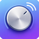
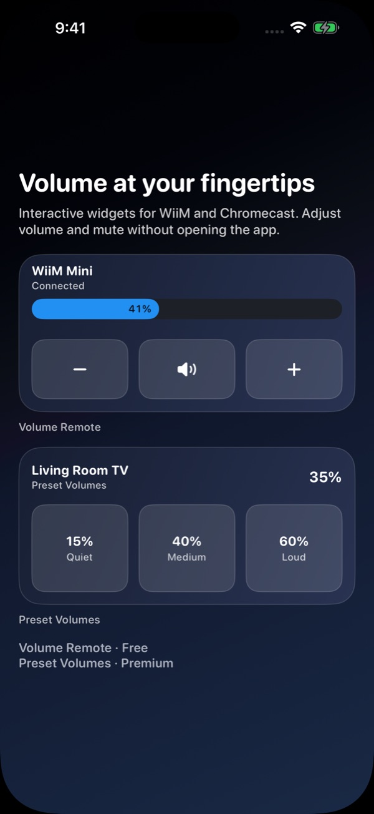
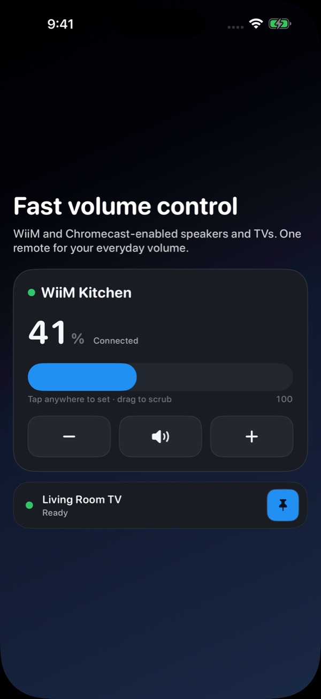
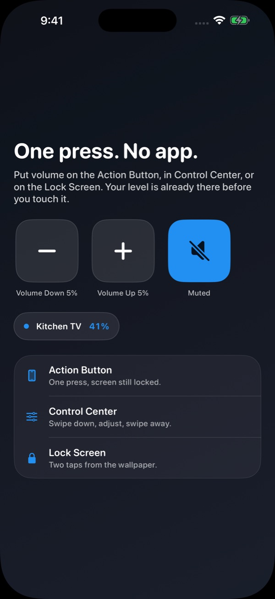
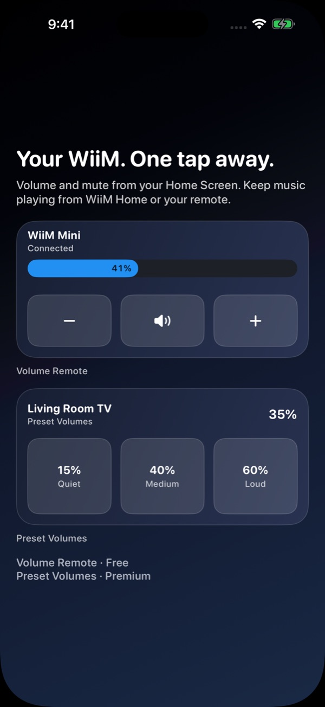
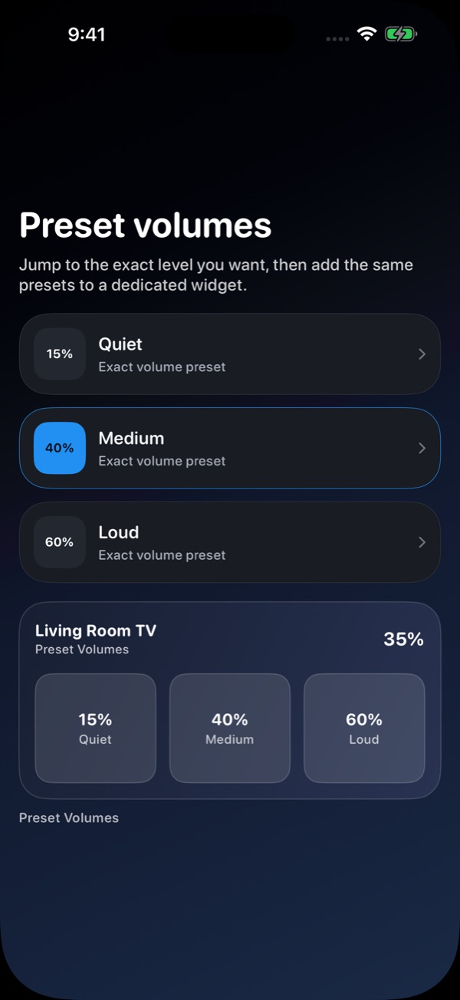
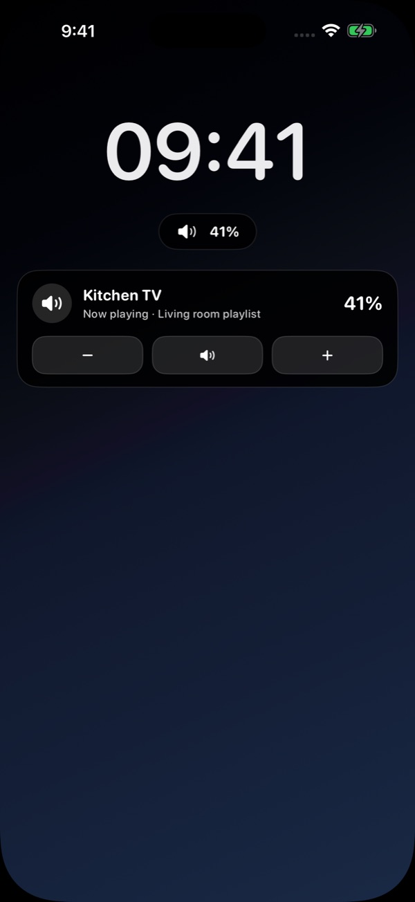
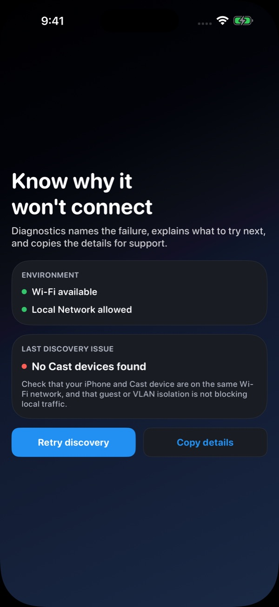
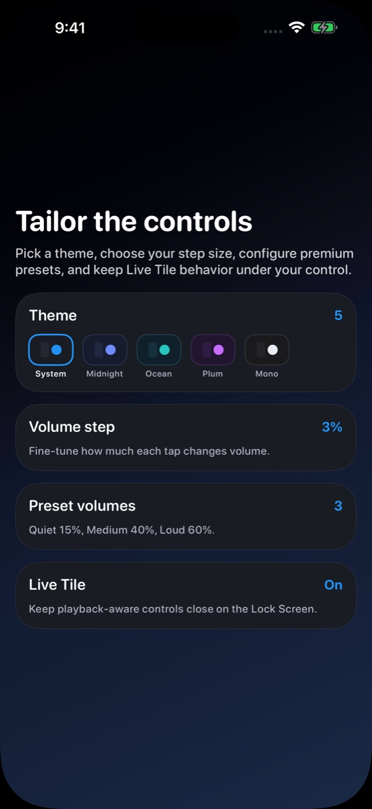

Interactive widgets
Volume Remote widgets for the Home Screen and Lock Screen change volume and mute without opening the app.

CastVolume Get the appVolume control widgets · WiiM + Chromecast
CastVolume puts volume and mute on your Home Screen and Lock Screen for Chromecast-enabled speakers and TVs and compatible WiiM receivers. Keep playing music in the app you already use. CastVolume controls the receiver directly.



New in 2.1
A new, optional widget for WiiM receivers. Start a preset, pause or resume, and nudge the volume, all from the Home Screen. The volume widgets you already use don't change.
From the App Store listing





Built for everyday control
Volume Remote widgets for the Home Screen and Lock Screen change volume and mute without opening the app.
Control Chromecast-enabled speakers and TVs and compatible WiiM receivers side by side, even when music was started in WiiM Home or with its remote.
Volume down, volume up and mute as Controls. One press, even with the screen locked.
A Live Activity keeps volume controls on the Lock Screen while something is playing.
Save exact levels like Quiet, Medium and Loud, then tap them from a dedicated widget.
When a receiver won't connect, CastVolume names the cause, suggests what to try next and copies the details for support.
What users say
★★★★★
“Being able to have instant volume control and a mute button right on my Lock Screen is a complete game-changer.”
★★★★★
“Awesome app and widgets for controlling google cast devices!”
★★★★★
“Such a cool app! It works flawlessly, and it’s super easy to use”
How it works
Allow Local Network access and CastVolume discovers receivers on your Wi-Fi. You can also add a WiiM by IP address.
Pinned receivers move to the top of the app and become the targets for your widgets.
Choose Volume Remote, Preset Volumes or the new WiiM Controls widget, and control volume without opening the app.
Plans
No ads, no account
One-time
One purchase, no subscription
Premium is a one-time in-app purchase. Current pricing is shown in the App Store and inside the app. Existing Premium purchases keep working.
Local and private
CastVolume talks to your receivers over the local network to send volume, mute and playback commands. No account, no cloud service. It controls receivers; it doesn't start or stream music and isn't a universal AirPlay remote.
Install CastVolume and put your speakers one tap away.